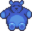
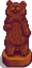
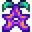

Musée
| Musée & Librairie de Stardew Valley | |
 | |
 | |
| Heures d'ouverture : | 8:00 à 18:00 |
| Fermé : | Jours de festival en ville |
| Adresse : | Côté Est de Pélican Ville, au Sud du Forgeron. |
| Occupants : | |
Le Musée peut être trouvé dans le coin Sud-Est de Pélican Ville, au Sud du Forgeron.
Le musée contient une librairie et une galerie pour afficher la collection du musée. Au début du jeu, la collection entière est vide. Gunther, le conservateur, demandera au Joueur de l'aider en faisant donation d'Artefacts et de Minéraux, mais aussi en trouvant les Livres perdus manquant de la librairie.
Un seul exemplaire de chaque artefact peut être donné. Les donations peuvent être réarrangées jusqu'à ce que la collection soit complète. Les objets donnés peuvent être examinés en faisant un clic droit dessus.
Penny donne des cours particuliers à Vincent et Jas dans la librairie le mardi, mercredi et vendredi.
Récompenses de donation
Gunther offre des récompenses lorsque la collection s'est agrandie à un certain point, ou lors de donation de certains artefacts.
Donations totales
Il y a en tout 95 objets pouvant être donnés au Musée.
| Objets donnés | Récompense |
|---|---|
| 5 | |
| 10 | |
| 15 | |
| 20 | |
| 25 | |
| 30 |  Grand ours Futan |
| 40 | |
| 50 |  Sculpture d'ours |
| 60 | |
| 70 | |
| 80 | |
| 90 | |
| 95 (tous les objets) |  Fruit étoilé (+ Succès 'Une collection complète') |
Minéraux donnés
Il y a en tout 53 Minéraux pouvant être donnés.
| Minéraux donnés | Récompense |
|---|---|
| 11 | |
| 21 | |
| 31 | |
| 41 | |
| 50 |
Artefacts donnés
Il y a en tout 52 Artefacts pouvant être donnés.
Pour obtenir la récompense "Offrande au feu", vous devez déjà avoir donné 10 artefacts incluant le Disque rare et le Gadget de Nain. La 11ème donation (ou plus tard) remplissant ces conditions vous récompensera du "Offrande au feu".
| Artefacts donnés | Récompense |
|---|---|
| 11 artefacts incluant: |
|
| 15 artefacts | |
| 20 artefacts | |
| 3 artefacts incluant: |
|
| 3 artefacts incluant: |
|
| 5 artefacts incluant: |
|
Livres
- Voir: Livres perdus
Succès
Il y a 2 Succès correspondant à la donation d'Artefacts ou de Minéraux au Musée.
- Trésor (Donner 40 différents objets au musée)
- Une collection complète (Compléter la collection du musée)
Notes
- Il y a en tout 102 espaces disponibles pour placer les donations mais un total de 95 objets à placer. Six espaces au centre de la plus grande table ne peuvent pas être atteints et ne peuvent pas être examinés, donc il peut être préférable de laisser ces espaces vides.
- Pour déplacer un objet déjà placé sur une table du musée, vous pouvez cliquer dessus pour le prendre, puis le déplacer où vous le voulez. Vous devez déjà être entré sur l'écran de donation pour faire cela, ce qui signifie que vous devez avoir un nouvel objet à donner. Une fois que tous les objets ont été donné, il n'est plus possible de les déplacer.
- Afin de pouvoir changer la position d'un artefact sur Switch, vous devez d'abord aller dans "Options" pour désactiver "Utiliser les menus pour la manette de jeu". Toutefois, les mêmes règles de changement d'emplacement d'artefact s'appliquent que sur PC.
- Glitch: Lorsque que vous êtes en train de faire un don, la fenêtre de votre inventaire se baisse automatiquement une fois qu'un objet est sélectionné. Si vous essayez de faire bouger l'écran (en cherchant des emplacements d'exposition libres par exemple) avant que votre inventaire ne soit entièrement baissé, vous pourriez être incapable de placer de nouveaux objets sur les emplacements libres. Pour remédier à cela, quittez simplement la fenêtre de donation et recommencez.

Intérieur du musée avec les espaces inatteignables foncés
Un exemple d'une collection organisée complète